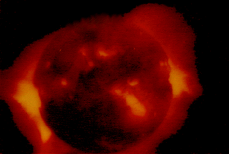
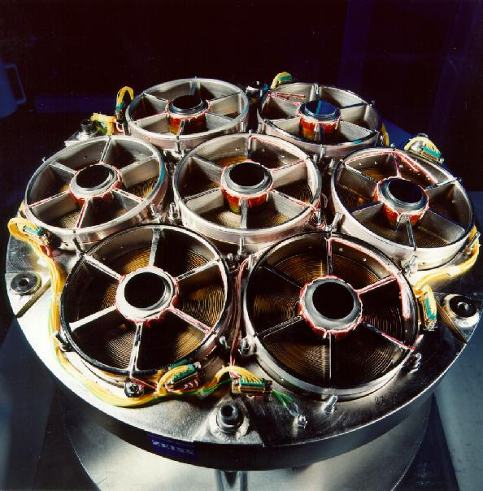
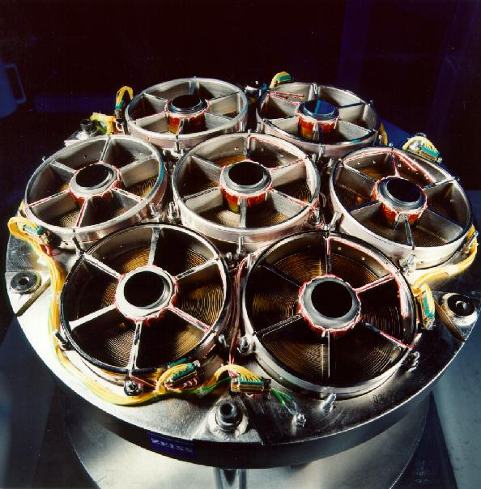
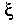
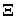

Signs for technical/specialized vocabulary
David Bar-Tzur
Links updated monthly with the help of LinkAlarm.

 

X-ray image of the Crab nebula.1; View of ABRIXAS's
uncovered composed eye (x-ray telescope).2
EXPLANATION OF THE GLOSSING SYSTEM
(to understand how I describe the signs in this dictionary).
For content knowledge of how to use the physics terms in context, see Guided tutorial in physics for interpreters.
For negotiating and developing temporary signs, see Preparation and sign negotiation
For vocabulary lists to determine helpful signs for a specific discipline, see Vocabulary lists by topic.
- x-axis
- ~ (2-D)
-
"X"@thumb + [1] draws horizontal line at thumb level, starting
L-CL--------------------------------------------------------------->
well back to include the negative part of the axis.
----------------------------------------------------->
- ~ (3-D)
-
"X"@thumb + [1] draws horizontal line at thumb level, starting
3D-CL-------------------------------------------------------------->
well back to include the negative part of the axis.
----------------------------------------------------->
- x-coordinate
- "X" C-O-O-R-D.
- xenon
- X-E. For more information on this and other elements, see The elements. And for fun, see Elements by Tom Lehrer. To see this song with captions, go to The Elements song by Tom Lehrer.
- Xerox ("to ~" and "the ~ Company")
- DH [X], PO away, FO up, moves from side to side under NDH [B], PO down. For a QuickTime movie of this sign, see ASL browser - xerox.
- xi (lowercase, ; uppercase, )
- Draw the shape of the letter in the air with the index finger.
- xi baryon (- and O)
- (1) [W], PO towards, FO > DS is held to resemble a xi + NEGATIVE"superscripted". (2) [W], PO towards, FO > DS is held to resemble a xi + ZERO"superscripted".
- x-intercept
- ~ (2-D)
-
"X" + [1] intersects thumb like CONFLICT
L-CL---------------------------------------->
- ~ (3-D)
-
"X" + [1] intersects thumb like CONFLICT
3D-CL--------------------------------------->
- x-ray
- "X" R-A-Y.
- x-ray burster
- "X" R-A-Y + [O^], PO away, FO up, flashes open and closed repeatedly.
Image credits
1. From http://www.astro.caltech.edu/mirror/keck/realpublic/gen_info/gallery/space.html (WMKO photo gallery - Crab nebula) which is no longer extant.
2. From http://wave.xray.mpe.mpg.de/abrixas/zeiss/t001 (View on ABRIXAS's uncovered composed eye - t001), which is no longer extant.

Home